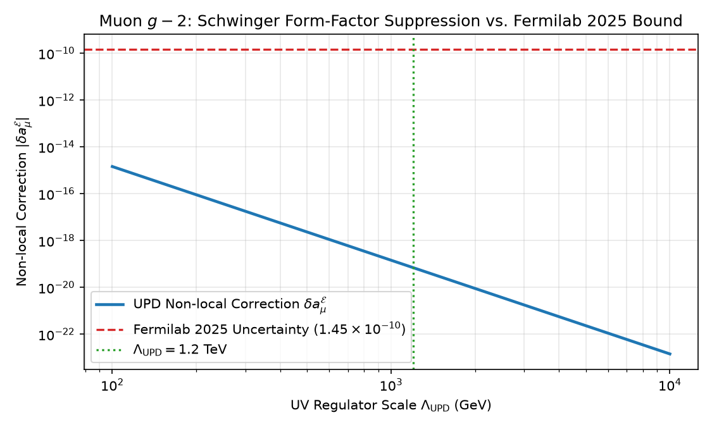

Anomalous Magnetic Moment of the Muon (g−2) in Unified Phase Dynamics
Author: H. Pavliuk (Independent Researcher) · ORCID: 0009-0000-0899-3463
Summary: Using the entire non-local Schwinger contour form-factor Ε(□) at ΛUPD = 1.2 TeV, UPD predicts |δaμΕ| ≈ 6.98 × 10−20, fully consistent with the final Fermilab 2025 world average aμExp = 116,592,0715(145) × 10−12 (124 ppb) and Lattice QCD HVP evaluations.
Verification Plot

References